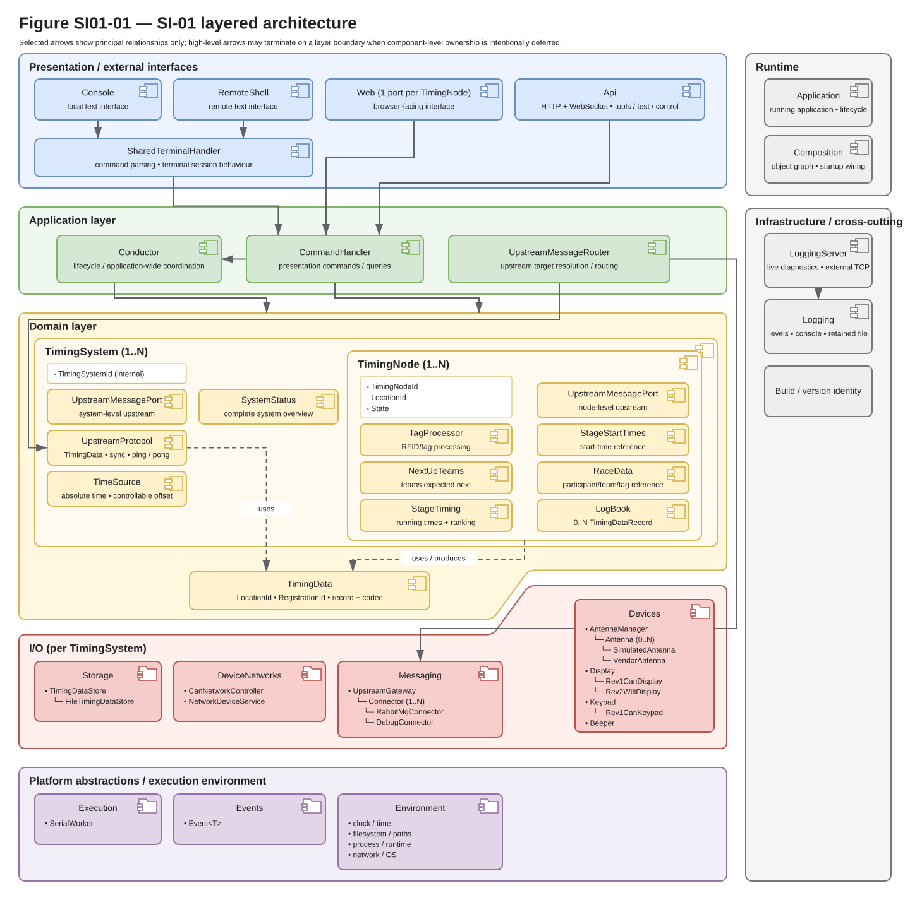
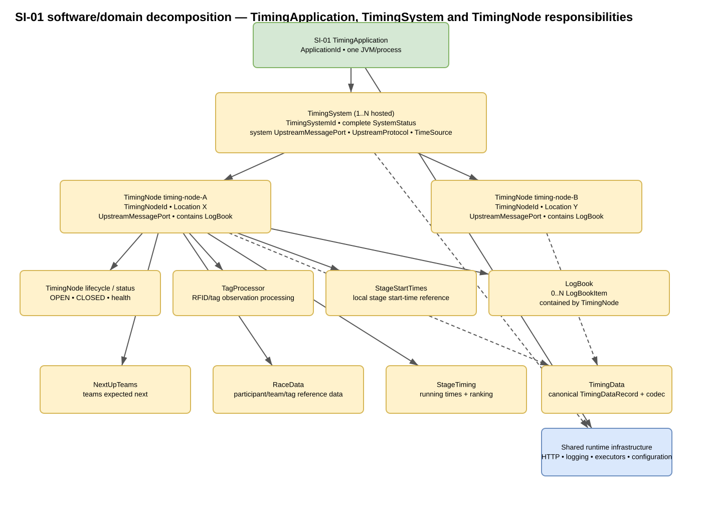
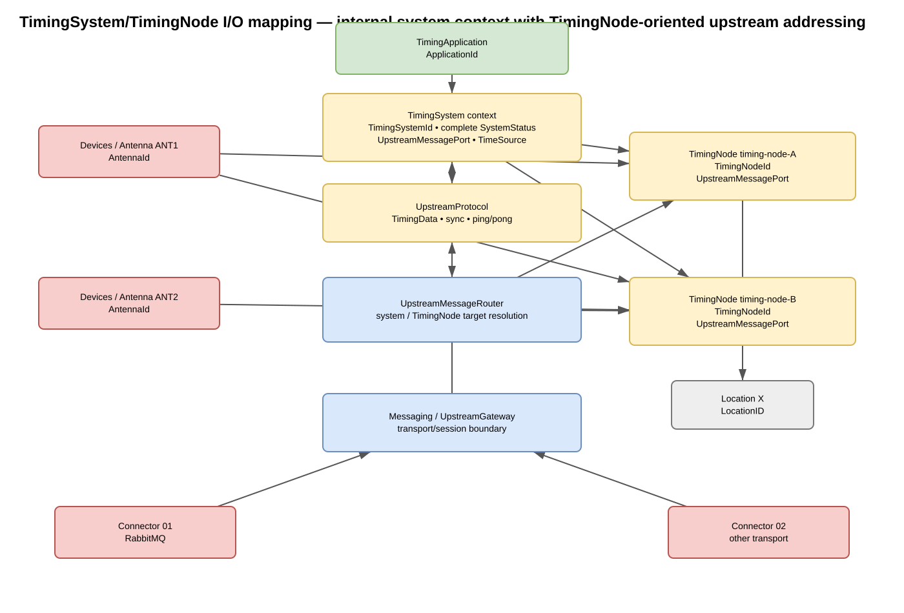
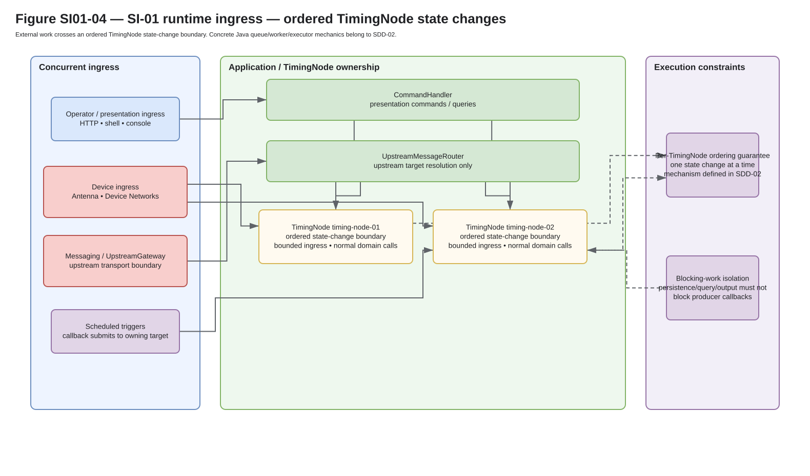
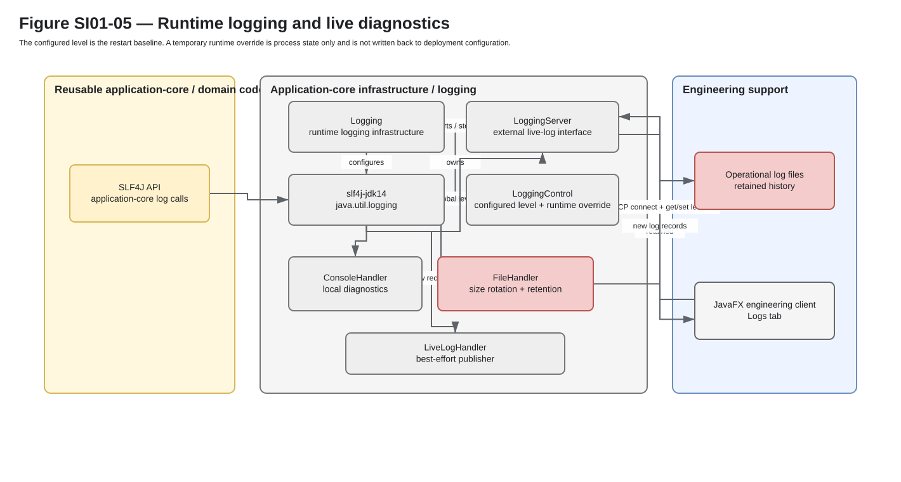

Timing Application Specification Document (SSD)¶
Status: working/review baseline
Software item: SI-01 — Timing Point Application
Purpose¶
This document combines the SI-01 requirements and architecture in one baseline.
Requirements keep their SI01-REQ-... identifiers. Detailed SDDs build on this
architecture instead of repeating it.
Terms and abbreviations¶
SSD — Software Specification Document
SI — Software Item
SSSD — Software System Specification Document
ISD — Interface Specification Document
SDD — Software Design Description
Relationship to other documents¶
The SI-01 specification consumes the software-system allocation and the interface obligations that apply to SI-01:
31-SSSD-software-system-specification-document.mdfor SI-01 allocation and software-system constraints;32-03-ISD-application-control-status.mdfor IF-03 obligations;32-04-ISD-web-interface.mdfor IF-04 Web interface obligations;32-05-ISD-timingdata-interchange.mdfor IF-05 TimingData obligations;32-11-ISD-application-configuration.mdfor IF-11 obligations;applicable parent/external-system inputs registered by
20-EXT-external-system-inputs.mdwhen an obligation is allocated directly to SI-01.
30-UC-system-use-cases.md provides operational traceability. If SI-01 behaviour later benefits from a separate software-item use-case decomposition, that may be added as an optional software-item use-case document and referenced here; its numbering range will be assigned when such documents are actually introduced, rather than reusing the SSD/SDD ranges.
03-domain-baseline.md supplies shared terminology/domain facts. It is supporting source knowledge rather than a substitute for a released requirement/interface baseline.
When documents are independently released, each released SSD shall identify the exact revision/version of its SSSD, applicable external inputs and ISD inputs. While this repository releases the local document set together, the repository release/tag/commit is the shared local baseline identifier.
Design boundary¶
Use this SSD for the requirements and architecture of SI-01: what the main parts are responsible for, how they relate, and which constraints detailed design must respect.
Implementation detail is split over focused SDDs:
Document |
What belongs there |
|---|---|
|
internal data/runtime behaviour: LogBook recording, commit ordering, persistence/recovery algorithms, query isolation, prepare-team/reference/display data |
|
concrete Java realisation: modules, packages, classes/interfaces, queue/executor/thread choices, provider discovery and dependency enforcement |
|
concrete transport realisation below the system/upstream semantic boundary |
applicable ISD |
externally visible interface/file/protocol requirements/semantics; an SDD shall not redefine them |
An SDD may choose the concrete mechanism, as long as it still fits this SSD and the applicable ISD. Keep class names, queue types, worker threads, file-recovery steps and package layout out of the SSD unless they change the architecture.
Software-item requirements¶
Requirement identifier convention¶
Requirements in this slice use:
SI01-REQ-<number>
Requirement identifiers in this document remain stable. Add new requirements under new identifiers; do not renumber existing requirements solely for document neatness.
Functional requirements¶
The functional requirements are grouped by externally observable registration system behaviour, starting with the operator’s OPEN and CLOSE operations. Technical requirements follow and state cross-cutting software constraints. Grouping is for navigation only: the stable requirement IDs and their authored Need relationships define identity and traceability. Technical requirements do not need an artificial use-case link when their authority is a software configuration, interface or platform constraint.
Registration operation¶
An OPEN command for a CLOSED TimingNode shall include a valid |
For an OPEN TimingNode, SI-01 shall provide a CLOSE operation that stops the
acceptance of new participant registrations and changes its lifecycle to
|
When a detected operational error prevents safe registration at the selected registration point, SI-01 shall reject an OPEN request and make the relevant problem and resulting state observable. A non-blocking problem may be reported without rejecting OPEN; the distinction shall follow the registration-point operational policy rather than treating every diagnostic warning as blocking. An unsuccessful OPEN shall not be reported as an OPEN transition. |
Connecting, disconnecting or reconnecting an operator Web client shall not by itself open, close, or change the active location of a registration point. SI-01 shall retain the authoritative lifecycle state independently of the browser session and expose the actual current state after reconnection. |
A lifecycle/location command accepted by SI-01 shall return an explicit semantic outcome: applied, rejected/invalid, unavailable, or outcome unknown when the request may have crossed a presentation boundary but current state cannot yet confirm its effect. Command outcome shall remain distinct from the subsequently observed TimingNode state. |
Participant registration¶
For an already-accepted registration, SI-01 shall commit TimingData using the
supplied supported registration action, resolved |
For an OPEN TimingNode, SI-01 shall accept a normal manual registration with a resolved RegistrationId, effective registration time and client-selected AUTO/MAN time-source classification. SI-01 shall preserve that effective time, use the currently active location and commit a manual-registration ADD through the normal registration path. A closed TimingNode or invalid input shall not produce a successful registration. |
SI-01 shall make committed registration TimingData observable through current history and live post-commit notification without exposing uncommitted records as committed state. |
SI-01 shall use the tag observation with the maximum RSSI as the registration observation and shall finalize that selection after a configured timeout without a new observation. |
For this requirement, the registration time is the original timestamp of the selected observation. The timeout closes the observation group; it does not replace the selected maximum-RSSI observation with the last observation. A maximum group duration, equal-RSSI tie handling and implementation scheduling belong to the detailed design.
This requirement does not introduce a minimum-RSSI rejection threshold.
Requirement: Keep local registration independent from presentation, logging and backoffice delivery SI01-REQ-051
|
SI-01 shall not require presentation clients, diagnostic logging or backoffice delivery for a local RFID registration to be accepted and committed. Failure or unavailability of those functions shall not by itself stop an operational TimingNode from accepting and committing local registrations. |
Within each TimingSystem, SI-01 shall request inventory from its AntennaManager while at least one of that system’s TimingNodes is OPEN. It shall request inventory to stop when none is OPEN. The manager applies this shared demand to its entire antenna set, including internal multiplexing, power preparation and power-down. A prior diagnostic self-test FAIL or inventory failure shall not suppress a later new attempt. Antenna-to-TimingNode observation routing remains separate from this manager-wide inventory control. Individual antenna start/stop/cycle commands are not part of the current interface. |
For antennas configured in the same inventory mutual-exclusion group, SI-01 shall keep at most one group member inventorying at a time and shall rotate attempts using the configured inventory interval. If one member fails to prepare or start inventory, SI-01 shall record that failed attempt and may continue with another group member. The failed member shall remain eligible for a later explicit inventory attempt. |
When an input provider exposes a semantic classification as part of its public contract, SI-01 shall preserve that classification through application policy and normal TimingNode processing where required, while provider-private codes and mapping tables remain behind the provider boundary. |
Operational status and client continuity¶
For each configured TimingNode, SI-01 shall provide a queryable current operational state independently of presentation transport. That state shall contain at least:
|
SI-01 shall provide a queryable current application status snapshot independently of diagnostic log output. |
The current application status snapshot shall contain at least:
|
The IF-03 status semantics are defined by 32-03-ISD-application-control-status.md; the current wire schema is defined by 33-03-IDD-api-http-websocket.md.
When a value represented in a TimingNode’s current operational state changes, SI-01 shall make the corresponding state change available to supported presentation interfaces that provide live-state delivery. The application owns the semantic change; an individual interface owns only its transport-specific delivery. |
After initial connection or reconnection, SI-01 shall allow a presentation client to establish a complete current state before later live state changes are treated as current. If that baseline cannot be established, the presentation state shall remain explicitly non-current rather than presenting cached state as live. |
After IF-03 reconnect, an engineering/operator client shall be able to rebuild current status and committed registration history before treating subsequent updates as a live view. Duplicate TimingData observed through history plus live delivery shall be identifiable by Node ID together with sequence number. |
Ready teams¶
SI-01 shall maintain the current prepare-team registry separately from participant TimingData. Accepted add/remove actions from keypad or operator input shall pass through the normal controlled TimingNode state-change path and shall remain traceable as ready-team history. |
Display control¶
For a configured passive CAN display, SI-01 shall derive the complete/current display state from authoritative application state and actively refresh the display after relevant state changes or device rediscovery. The passive display shall not be required to reconstruct domain history. |
SI-01 shall make the current timing, ready-team and reference data required by a configured smart display available through a network-facing application boundary. A connecting or reconnecting smart display shall be able to obtain a complete current snapshot before relying on later incremental changes; rendering state remains owned by the smart display. |
Registration cabinet and backoffice¶
SI-01 shall accept decoded semantic reference-data updates from a configured backoffice boundary, resolve the addressed TimingNode, validate the update and apply it only to that TimingNode’s owning reference state. Accepted/rejected outcome and enough freshness/health state to diagnose synchronisation shall be observable. |
SI-01 shall expose committed TimingNode-scoped outbound data to configured backoffice connectors through transport-independent semantic messages while preserving source identity and source ordering. Concrete connector routing shall not redefine TimingNode identity or registration semantics. |
Loss of a configured backoffice transport shall not discard locally committed outbound work. After transport recovery, SI-01 shall resume pending synchronisation without inventing or reusing committed source sequence identity. |
Errors and recovery¶
At application startup SI-01 shall attempt one self-test for every configured antenna. The PASS/FAIL result is diagnostic information only. A FAIL shall not by itself prevent a later initialization or inventory attempt for that antenna. Failure of one antenna operation shall not prevent independent operation or later attempts of other configured antennas. The latest failed operation shall remain visible in antenna status until a later attempt updates that status. |
After a self-test, initialization or inventory attempt fails, SI-01 shall allow a later inventory demand to start a new preparation and inventory attempt without requiring SI-01 process restart. A later inventory demand is created at least when:
SI-01 shall not automatically loop retries solely because an attempt failed. A failed attempt shall not be marked applied. A later demand shall not be rejected solely because an earlier self-test or inventory attempt failed. |
On startup, SI-01 shall rebuild each configured TimingNode’s committed TimingData history from valid complete persisted records in sequence-number order before accepting new TimingData commit work for that TimingNode. The next sequence shall be 1 when no committed record exists, otherwise the last committed sequence plus 1. Recovery of committed TimingData shall not by itself restore the previous operational Location ID or OPEN state. |
When recovering the reference TimingData representation, SI-01 shall not treat an incomplete trailing record as committed. A malformed complete record, unsupported representation version, Node ID mismatch, duplicate sequence, sequence gap or sequence regression shall produce an explicit recovery failure for that TimingNode rather than being silently skipped or renumbered. |
A failure while restoring or validating recoverable state for one configured TimingNode shall not by itself prevent independently healthy TimingNodes or diagnostic interfaces from starting and remaining available. For the affected TimingNode, SI-01 shall:
|
Development, engineering and system testing¶
The development auto-registration control shall be usable only when SI-01
advertises the corresponding engineering capability as both supported and
enabled. The control shall inject an already-accepted automatic registration at
the registration boundary after antenna/tag processing. A client using this
control shall not supply final TimingData, source sequence, active |
SI-01 shall support system verification while running as a separate process through its public application interfaces, without requiring test-only mutation of internal application or domain state. |
A simulation composition shall be able to host multiple TimingNodes, inject synthetic device behaviour through normal adapter boundaries and exercise the same TimingNode, persistence and backoffice paths as a production composition without introducing a second domain/application implementation. |
External hardware and transport adapters used by SI-01 shall be replaceable in a test composition by controllable stubs that implement the same public contracts, so injected reads, discovery, disconnects, faults and recovery traverse normal application/domain paths. |
Backoffice transport shall be selectable through external configuration/composition. A lightweight real-process network transport shall be usable for loop/integration testing of TimingNode-scoped semantic messaging without requiring the production RabbitMQ connector. |
The RabbitMQ backoffice connector shall support automated integration testing against a disposable broker for source-specific inbound/outbound routing, connection recovery, consumer restoration and resumed pending outbound delivery, without embedding production credentials or private topology in the public test fixture. |
Technical requirements¶
Application process and configuration¶
SI-01 shall start using externally supplied configuration rather than requiring production/deployment values to be compiled into application code. The deployment/configuration contract is defined by IF-11. |
SI-01 shall provide a controlled shutdown operation that can terminate the running application without requiring operating-system-level forced process termination. |
SI-01 shall support configuration of one or more |
IF-11 defines the internal TimingSystem/TimingNode configuration hierarchy and how a configured TimingNode is referenced from presentation and I/O configuration while keeping SystemId internal and NodeId, antenna identity and location identity distinct. Detailed operational RFID behaviour is owned by its functional requirements and device/input design rather than by the configuration contract.
Build and version identity¶
A running SI-01 process shall expose one build/version identity that identifies the application artifact being executed. |
Every supported SI-01 interface that exposes build/version identity shall report the same build identity for the same running process. |
The semantic build identity is defined by IF-03. The current v1 wire fields are defined by 33-03-IDD-api-http-websocket.md.
Persistence and data integrity¶
SI-01 shall support the reference TimingData representation defined by
|
SI-01 shall successfully write one complete TimingData record to the configured local TimingData store before completing that TimingData commit. Only after that write succeeds may SI-01 add the record to committed LogBook state, publish a committed live event or report the commit as successful. If the write fails or remains incomplete, the commit shall fail and the record shall not be treated as committed. |
Transport semantics, network exposure and compatibility¶
For each application-status value exposed by more than one supported SI-01 interface, those interfaces shall report the same semantic value for the same running application state. Transport-specific encoding may differ. |
For an SI-01 command or query exposed through more than one transport, the transport used shall not change its defined preconditions, effects, result semantics or failure semantics. |
Each IF-03 listener shall bind only to loopback interfaces by default. Binding an IF-03 listener to a non-loopback interface shall require explicit configuration. |
Compatible IF-03 additions shall preserve the meaning of existing operations and values. A change that breaks existing IF-03 semantics shall use a new major interface version or a separately specified migration contract. |
Lifecycle interpretation¶
The first registration baseline uses the following TimingNode lifecycle semantics:
at least one configured TimingNode is represented;
a TimingNode that cannot safely complete contained startup recovery is represented as
ERRORand does not accept normal operational commands;explicit LocationId assignment is allowed only while CLOSED;
normal OPEN carries the requested valid LocationId and applies that LocationId together with the CLOSED-to-OPEN transition as one ordered operation;
a restarted TimingNode begins CLOSED with no current operational location;
the current location cannot change while OPEN;
an accepted semantic registration can commit only while OPEN;
committed registration history and live post-commit updates are observable through the applicable presentation interface;
physical RFID observation/filtering is outside the accepted-registration application operation.
Traceability view¶
Requirement |
Upstream authority |
Interface/design allocation |
|---|---|---|
SI01-REQ-001/002 |
SSSD deployment/operability allocation |
IF-11 + SI-01 composition/runtime |
SI01-REQ-003 |
UC-014/015; SSSD software-item topology |
IF-11 + SI-01 runtime composition |
SI01-REQ-010/011 |
UC-009; SSSD IF-03 allocation |
IF-01/02/03; shared query boundary |
SI01-REQ-020/021/022 |
UC-001/009/020; SSSD application-status allocation |
Status service/model + IF-01/02/03 |
SI01-REQ-023/024/025/026 |
UC-001/002/009/020; shared presentation-state and lifecycle-result semantics |
TimingNode current-state model + presentation adapters |
SI01-REQ-030/031 |
UC-009/014/015/016; SSSD interface/testability separation |
shared application boundary |
SI01-REQ-032 |
IF03-REQ-002/009 |
API binding/configuration |
SI01-REQ-033 |
IF03-REQ-010 |
interface compatibility/evolution |
SI01-REQ-040/072/073/074 |
UC-001/002/009 |
OPEN/CLOSE state transitions, session independence and blocking-error policy |
SI01-REQ-041/043 |
UC-003/009 |
TimingNode accepted-registration operation + IF-03 engineering control |
SI01-REQ-042/044 |
UC-003/009/011 |
LogBook/TimingData event + IF-03 bounded history/event delivery |
SI01-REQ-045 |
UC-011 + IF05-REQ-001..007 + 33-05-IDD |
reference TimingData codec/persistence boundary |
SI01-REQ-046 |
UC-003/012 |
local TimingData commit ordering |
SI01-REQ-047 |
UC-013 + IF05-REQ-002/003/007 |
startup TimingData recovery |
SI01-REQ-048 |
UC-013 + 33-05-IDD |
reference-store recovery validation |
SI01-REQ-049 |
UC-020 + SI01-REQ-021/022 + IF03-REQ-017 |
degraded TimingNode containment + diagnostic status |
SI01-REQ-050 |
UC-003 |
RFID passage aggregation + strongest-observation selection |
SI01-REQ-051 |
UC-003/012 |
local registration independent from presentation, diagnostic logging and backoffice delivery |
SI01-REQ-052 |
UC-003/004 |
per-antenna startup/runtime failure containment + observable antenna status |
SI01-REQ-053 |
UC-003 + IF-11 antenna mapping |
TimingNode-driven antenna inventory/power lifecycle |
SI01-REQ-054 |
UC-003 + IF-11 antenna manager policy |
mutually exclusive antenna inventory scheduling |
SI01-REQ-055 |
UC-004 |
retry/recovery of antenna operation without process restart |
SI01-REQ-060 |
UC-005 |
ready-team state/history + keypad/operator input |
SI01-REQ-061 |
UC-006 |
passive CAN display adapter |
SI01-REQ-062 |
UC-007 |
smart-display network boundary |
SI01-REQ-063 |
UC-010 |
backoffice reference-data ingress |
SI01-REQ-064/065 |
UC-011/012 |
transport-independent backoffice sync + outage recovery |
SI01-REQ-066 |
UC-015 |
simulation composition through production paths |
SI01-REQ-067 |
UC-016 |
public-contract test stubs |
SI01-REQ-068 |
UC-017 |
alternative network backoffice transport |
SI01-REQ-069 |
UC-018 |
RabbitMQ integration verification |
SI01-REQ-070 |
UC-019 |
provider semantic-classification boundary |
Software-item architecture¶
Architecture drivers¶
The Timing Point Application (SI-01) architecture is driven by these concerns:
run on the original Raspberry Pi Zero / Zero W target; actual runtime/resource constraints are established by measurement;
remain usable on Linux/Windows development and test hosts;
keep timing/domain state in the application;
support 1..N internal TimingSystems, each with 1..N logical TimingNodes, without state leakage;
preserve deterministic ordering of state-changing work;
isolate external I/O concurrency from application/domain state mutation;
keep the local registration work from antenna observation through TagProcessor, TimingNode queue admission, the required TimingData write and LogBook commit independent from presentation, diagnostic logging and backoffice delivery;
preserve unambiguous time semantics across local time zones, daylight-saving transitions and wall-clock corrections;
remain testable without production RFID, CAN, upstream/backoffice or proprietary implementations;
expose one coherent command/query/status/event model to local and network presentation adapters;
support local persistence/recovery and disconnected operation;
keep the public reference/core implementation independent of private production source;
allow selected concrete implementations to be supplied through a small Java-8-compatible provider/extension mechanism without making normal domain/application code plugin-aware;
avoid reusable-core or extension complexity that is not justified by the application.
+1 scenarios used to validate the architecture¶
The existing use cases in 30-UC-system-use-cases.md are the scenario source. The SSD should not create a second competing use-case catalogue.
Representative architecture-validation scenarios include:
start the Timing Point Application (SI-01), load configuration, expose version/status and shut down cleanly;
accept an operator command through local or network presentation and route it to the correct logical TimingNode;
accept a device observation from an external callback without allowing that callback thread to change application state directly;
persist accepted operational state and recover it after restart;
continue local operation while a GUI/test client or upstream connection is unavailable;
host several independent TimingSystems, each with one or more TimingNodes, in a development/simulation composition without state leakage;
substitute public stubs for production devices/transports while exercising the same application/domain paths;
capture and process observations correctly when local civil time crosses a daylight-saving transition or the operating-system wall clock is corrected forwards/backwards.
These scenarios are used to check the logical, process, development and deployment views below.
Logical view¶
Layered application architecture¶
The primary logical view is a responsibility/layer view. It describes semantic ownership and dependency direction; it does not prescribe one Maven artifact per layer.
|
|
|
|
|
The executable has one visible composition flow. From validated configuration it proceeds in a deliberately simple order:
resolve effective configuration
-> create PlatformEnvironment
-> construct Runtime resources
-> construct Domain, I/O, Application and Presentation objects
-> wire cross-component relationships
-> Runtime execution resources start
-> Application Conductor activates the application core
AntennaManager
TimingSystem Conductor(s)
TimingNode(s)
-> Presentation activates
Construction itself must not start physical application worker threads or install hidden cross-component behaviour. Runtime constructs and wires the object graph and owns the physical execution resources. The Application Conductor owns activation order and rollback for the major application components. It activates the AntennaManager before the Domain TimingSystem Conductor, so the system Conductor can apply its initial inventory decision after its TimingNodes are active. Deactivation uses the reverse order. Concrete Presentation adapters are composed by Runtime and activate after the coordinated application core. Normal application/domain interactions do not route through Runtime after activation.
The compact software/domain ownership model is intentionally also kept as copyable text:
Application
+-- ApplicationId
+-- Conductor application lifecycle / activation order
|
+-- 1..N TimingSystem
+-- SystemId internal composition/simulation identity
+-- Conductor system-local coordination / inventory
+-- SystemStatus complete current system overview
+-- UpstreamMessagePort system-level upstream messages
+-- UpstreamProtocol
| +-- heartbeat / ping
| +-- synchronisation / reconciliation
+-- 1..N TimingNode
+-- NodeId functional upstream/timing-data identity
+-- LocationId
+-- lifecycle / status
+-- UpstreamMessagePort
+-- TagProcessor
+-- StageStartTimes
+-- LogBook
| +-- 0..N TimingData
+-- NextUpTeams
+-- RaceData
+-- StageTiming
+-- uses / produces TimingData
Shared Domain contracts:
+-- EventData
+-- TimingData

Figure SI01-01 — SI-01 layered architecture.The source for this view is docs/_diagrams/layered-architecture.yaml.
In Figure SI01-01, TimingSystem and TimingNode are shown as UML-style
component/aggregate containers. They are the architecture identities themselves,
not UML class declarations. A small neutral inner property block lists the
important identity/state concepts owned by each aggregate, without its own title,
stereotype or component glyph; it therefore does not prescribe Java fields or a
concrete class shape. Geometric containment plus the TimingNode (1..N) label
expresses that one TimingSystem owns 1..N TimingNodes.
The Domain/I/O boundary is deliberately shaped rather than a rigid horizontal
layer cake. Domain has extra space below its contained components and yields
through a lower-right polygon cut-away. I/O uses a complementary polygon with a
raised right shoulder around Devices. A small visible gap remains between both
layer outlines, so neither responsibility appears to overlap the other. This expresses architectural proximity/cohesion only. Domain may call an I/O
component directly when the domain behaviour genuinely depends on that component;
for example, the TimingSystem Conductor calls its AntennaManager to change
the shared inventory state.
Presentation¶
Presentation owns client-facing interfaces and their external representations. Its structure is functional interface first, transport second:
presentation/
interfaces/
console/
shell/
web/
api/ primary API transport/message classes
common/
terminal/ behaviour genuinely shared by console + shell
In Figure SI01-01, a small port glyph on the outer edge of a Presentation
component denotes an externally visible interface of that in-process SI-01
adapter. Distinct externally meaningful endpoints are shown separately. Both Web and
API expose separate HTTP and WebSocket interface ports on their owning Presentation
component. These are architectural interface ports and do not by themselves imply that
HTTP and WebSocket must use different TCP port numbers. The lines from
Presentation components down toward SharedTerminalHandler or
PresentationGateway are ordinary in-process relationships, not sockets between
separate processes. PresentationGateway is an internal Application-layer component
and therefore has no external interface port.
The API is the general programmable interface of the Timing Point Application (SI-01) for remote clients, engineering tools and headless black-box/integration tests. A06/A07 implement only its first version/status/event slice; later supported control and diagnostic operations grow inside the same functional interface. |
Web is the browser-facing presentation interface of SI-01. Each configured
|
|
|
|
presentation.common is reserved for behaviour genuinely shared across
presentation interfaces. Terminal behaviour shared by Console and RemoteShell
belongs under presentation.common.terminal. API HTTP, WebSocket and
wire-message mapping remain together at the interfaces.api component
package root while that implementation is still small; deeper transport/message
subpackages are introduced only when they contain a real cohesive decomposition.
Presentation converts external requests to application calls and application results to client representations. It does not own mutable application/domain state.
Application¶
The application responsibility coordinates use cases:
application/
ApplicationConductor
application component lifecycle / activation order
PresentationGateway
shared presentation-facing application gateway
TimingNodeProxy
node-scoped presentation-facing application boundary
ConfigurationControl
configuration query/update use-cases
UpstreamMessageRouter
upstream-only application/domain target resolution and routing
|
|
|
The proxy does not own mutable TimingNode state. It maps presentation intent to the
TimingNode’s typed ordered operations and maps node status to the node-scoped,
presentation-facing |
Once code is executing for a TimingNode, normal direct Java calls are preferred; do not introduce messages merely to preserve a layer diagram.
The router is deliberately not a generic application message bus or mediator for normal collaboration between domain components. |
Domain¶
The domain owns timing semantics, per-TimingSystem system semantics and TimingNode state. The main responsibilities are deliberately not represented as one parent/child tree:
TimingSystem (1..N per Application)
SystemId internal only
Conductor first system coordinator; TimingNodes + inventory
SystemStatus complete current system overview
UpstreamMessagePort system-level upstream messages
UpstreamProtocol
TimingData transfer
synchronisation / reconciliation
ping / pong and other protocol messages
1..N TimingNode
NodeId functional protocol/data identity
LocationId
State
UpstreamMessagePort TimingNode-level upstream messages
TagProcessor
StageStartTimes
LogBook
0..N TimingData
NextUpTeams
EventData
StageTiming
uses / produces TimingData
TimingData
common semantic contracts
configured concrete profile
factory / codec / compatibility
TimingSystem is the parent logical domain aggregate. One Timing Point Application hosts 1..N TimingSystems; each TimingSystem owns an internal SystemId, one Conductor, a complete SystemStatus overview, a system-level UpstreamMessagePort, one UpstreamProtocol context and 1..N TimingNodes. SystemId exists to separate local runtime/simulation instances and is not assumed to be visible to the upstream peer. This lets one process simulate or host multiple independent timing systems without changing the functional TimingNode-oriented external contract.
One Its control style is event-triggered reconciliation. A relevant state-change notification wakes the Conductor; the reconciliation reads authoritative current state, derives the required system intent and asks the owning device component to converge on that intent. The notification is a trigger, not a control-history item that must be replayed. |
TimingNode is the per-location domain aggregate inside one TimingSystem. It owns its
identity (NodeId and LocationId), lifecycle/state and the per-node
components shown inside the TimingNode aggregate in Figure SI01-01.
A TimingNode is also the active serialization and ownership boundary for mutable per-node
state. State-dependent commands and reads that require exact ordering enter one bounded
serial execution path and are processed in order. Current-state observation may instead use
an immutable snapshot safely published by that owned path after completed transitions. Code
outside the boundary does not directly read or mutate lifecycle/location state or the mutable
contents of its contained LogBook, NextUpTeams, StageStartTimes and RaceData
objects. Those objects remain passive and do not receive their own workers. The LogBook keeps
0..N committed immutable TimingData values and does not own a second worker or second
timing-record representation.
Both aggregate levels expose a bidirectional semantic UpstreamMessagePort.
The two roles share the same semantic concept but have distinct engineering
identities in Figure SI01-01 so interactive selection remains unambiguous.
The TimingSystem-level |
The TimingNode-level |
|
|
|
|
|
|
LogBook is passive state contained by one TimingNode and keeps that node’s
committed timing history as 0..N immutable TimingData values. Concrete objects
may come from different compatible TimingData profiles; LogBook does not maintain
a second logbook-specific record representation.
EventData is a separate SI-01/domain capability alongside TimingData.
EventData owns event-specific source/reference relationships; TimingData owns
committed timing facts. One RegistrationId may map from multiple TagIds. The
antenna/provider layer performs physical decoding/decryption but exposes a
semantic TagId to generic processing.
TimingData is the SI-01/domain capability that realises the system-owned
IF-05 TimingData Interchange contract. IF-05 defines the common semantic
contracts, identity/ordering rules and compatibility obligations. A configured
TimingData profile supplies the concrete immutable TimingData classes plus the
matching factory and codec.
A TimingDataProvider supplies that coherent profile family. Its factory is
stateless and constructs concrete TimingData values from explicit construction
values; it does not own TimingNode lifecycle policy, sequence allocation,
persistence or event publication. The same common provider/API boundary is
reusable by SI-01 and engineering tools such as the JavaFX Development Client;
normal domain users remain unaware of provider discovery mechanics.
UpstreamProtocol is a Domain responsibility owned in the context of one TimingSystem. It uses TimingData for timing-record transfer and additionally defines semantic messages needed for synchronisation, reconciliation, heartbeat/ping and other upstream-system exchanges. It is therefore broader than the TimingData record format itself. Protocol-level activity that is not about one TimingNode stays here rather than leaking into each TimingNode. A concrete protocol implementation may be selected through an UpstreamProtocolProvider; the semantic boundary remains the same whether the implementation is built in or extension-provided.
PlatformEnvironment supplies the process/runtime environment capabilities used by
SI-01: a raw absolute wall-clock Clock, a MonotonicClock for elapsed-time
semantics and a normalized OperatingSystem identity used by Runtime composition.
Runtime composes the timing TimeSource from the wall-clock basis and decides which
Domain and I/O components share that source. The TimeSource contract itself is not tied
to TimingSystem or TimingNode. Platform-specific defaults use the normalized
operating-system identity rather than scattered JVM property checks.
Detailed domain semantics belong in 03-domain-baseline.md.
Runtime execution model¶
Execution mechanics support the layered architecture but are not a separate logical layer in Figure SI01-01. Runtime owns the physical execution resources; the functional components own their logical ordering/serialization boundaries. Execution identity therefore belongs to the component whose work is being ordered, not to the physical worker that happens to execute one turn.
The architecture distinguishes a logical serial lane from a physical worker:
logical lane
= component-local ordering, admission and queue state
physical worker
= Runtime-owned thread/executor resource that executes work from one or more lanes
A Timing Point Application may contain multiple TimingNodes without allocating one physical worker per node. Each TimingNode keeps an independent bounded serial lane so its mutable state remains ordered and isolated, while all TimingNode lanes use one shared physical TimingNode worker by default.
Each TimingNode-local TagProcessor likewise owns its own logical scheduled serial lane, while all TagProcessor lanes share one physical TagProcessor worker by default.
Each TimingSystem Conductor owns a logical serial coordination lane.
Its state reconciliation never runs synchronously on the thread emitting a
TimingNode state event. Different system-Conductor lanes may share one
Runtime-owned coordination worker. The Application Conductor performs
lifecycle ordering and does not need its own coordination lane.
AntennaManager owns one serial scheduled I/O lane. Self-test, initialize, power-control transitions, start/stop inventory and multiplex switching/rotation all enter that same logical lane; the lane runs on one Runtime-owned I/O-role worker. There is no separate initialization worker and no separate switching worker in the baseline. Elapsed-time waits such as power stabilization are scheduled continuations on that same lane, so the physical I/O worker is released while time passes.
The baseline execution topology is therefore:
Domain
TimingNode 1 ─ serial lane ─┐
TimingNode 2 ─ serial lane ─┼─> one shared TimingNode worker
TimingNode N ─ serial lane ─┘
TagProcessor 1 ─ scheduled serial lane ─┐
TagProcessor 2 ─ scheduled serial lane ─┼─> one shared TagProcessor worker
TagProcessor N ─ scheduled serial lane ─┘
Domain
system Conductor 1 ─ serial lane ─┐
system Conductor N ─ serial lane ─┴─> one shared coordination worker
I/O
AntennaManager ─ scheduled serial lane ─> one shared I/O worker
The default is one physical worker per functional role, not one worker per component instance and not one worker per CPU core.
This minimal topology applies to both known deployment classes:
the simple one-antenna Timing Point Application on Raspberry Pi Zero;
the larger Raspberry Pi 3 Model B deployment, including the known two-antenna configuration that multiplexes inventory at 500 ms.
The Raspberry Pi 3 having more CPU cores does not by itself justify more physical workers. Likewise, configuring multiple TimingNodes or multiple antennas does not automatically increase worker count. In the known two-antenna baseline, AntennaManager deliberately inventories only one multiplex-group member at a time, so an additional I/O worker is not assumed to provide useful antenna parallelism.
Additional physical parallelism is a measurement-driven refinement. V01 runtime characterization must demonstrate a concrete contention, latency or throughput problem before a role receives more physical workers. Any such change must preserve the component-local serial-lane semantics above.
Platform provides reusable execution mechanics for components that need more than direct lane admission. In particular, bounded result waiting, timeout/cancellation propagation and delayed continuation are treated as shared execution concerns rather than being reimplemented independently by each I/O/Application component.
Higher-level cooperative task handling is optional. A component that only needs direct serial admission/ordering continues to use its execution lane directly. TimingNode and TagProcessor therefore remain direct lane users in the baseline.
The TimingSystem Conductor uses cooperative turns on its serial lane to
coalesce multiple TimingNode change signals into one system-level
reconciliation. No scheduled lane is necessary for this rule; AntennaManager
owns timed work.
Runtime worker items are deliberately bounded. A worker item must not occupy a physical worker merely to wait for time to pass. Delays such as antenna power stabilization are represented as scheduled continuation work on the owning logical lane:
power on
-> return worker
-> scheduled continuation after stabilization delay
-> self-test / initialize
External I/O may require bounded waiting for one device/protocol operation, but a shared worker must not be monopolized by an unbounded wait, polling loop or sleep. A provider that needs long-lived blocking behaviour must expose that behaviour through an execution design that does not stall unrelated work on the shared role worker.
TimingNode is a different kind of execution boundary: one admitted Domain item is normally processed to its semantic completion before the next item on that TimingNode lane. That may include short in-process state work, LogBook/persistence commit and publication of the resulting immutable event. TimingNode work must not, however, sleep for elapsed time or wait on external hardware/network activity.
The one-worker I/O baseline is therefore not justified by an assumption that device calls are free or instantaneous. It is justified by the intended quality of worker items: short/bounded provider operations plus scheduled continuations for elapsed-time waits. Additional I/O workers remain a V01 evidence-based decision if independent I/O lanes later contend on genuinely blocking operations.
Thread priorities are not part of correctness. The baseline uses normal/default JVM priority for all Runtime-owned workers; priority tuning requires measurement evidence and target-platform requalification.
The concrete Java realization of these rules belongs in SDD-02. That design may
use types such as SerialExecutor, SerialScheduledExecutor,
ThreadPoolExecutor and ScheduledThreadPoolExecutor, but those Java types
are implementation mechanisms rather than the architecture identity of the
execution model.
I/O¶
I/O contains adapters that move data between the application and the outside world. Figure SI01-01 shows one logical I/O layer, but the runtime composition is per TimingSystem: with 1..N TimingSystems, the corresponding Storage/Devices/Messaging/DeviceNetworks composition is instantiated 1..N times unless a lower-level implementation explicitly multiplexes a shared physical resource.
io/
Devices
AntennaManager
Antenna (0..N)
SimulatedAntenna
PowerDevice (0..N)
SimulatedPowerDevice
Display
Rev1CanDisplay
Rev2WifiDisplay
Keypad
Rev1CanKeypad
Beeper
DeviceNetworks
CanNetworkController
NetworkDeviceService
Messaging
UpstreamGateway
Connector (1..N)
RabbitMqConnector
SocketConnector
Storage
file
db
Presentation stays separate because it owns client-facing API/view semantics. I/O owns the external boundary and its mapping to TimingNodes. In Figure SI01-01 Domain and I/O both use explicit polygon outlines. The I/O outline rises around Devices, so Devices remains completely inside its owning layer while being drawn beside the lower Domain area. The normal I/O band and its Storage, Messaging and DeviceNetworks cards stay compact because they no longer need to inherit the height required by Devices. The contained Storage, Devices, Messaging and DeviceNetworks elements carry packaging-component notation where the package-like ownership/decomposition semantics are meaningful. For compactness, Figure SI01-01 shows their contained software components as an indented hierarchy rather than as nested component boxes.
|
|
Service discovery, connection/session handling and protocol framing are
subordinate design concerns of |
The semantic |
Nested I/O component identities¶
The compact I/O cards in Figure SI01-01 keep their subordinate software components as structured rows rather than expanding each component into a separate box. The following rows are nevertheless stable architecture objects and use the same engineering identity model as top-level diagram nodes.
|
|
|
|
|
|
|
|
|
|
|
|
|
|
|
|
|
|
Platform¶
Platform is the small technical foundation below the application, domain and I/O responsibilities. It contains JDK-only reusable primitives and low-level execution-environment abstractions:
bounded serial execution (SerialExecutor / SerialScheduledExecutor)
cooperative task execution (SerialTaskRunner / ScheduledTaskRunner)
coalesced component-task wake control (CooperativeTaskController)
local typed events (Event<T> / EventSource<T>)
absolute wall clock (Clock)
elapsed-time source (MonotonicClock)
normalized platform family (OperatingSystem)
A component may compose Platform execution primitives such as SerialExecutor,
SerialScheduledExecutor, SerialTaskRunner, ScheduledTaskRunner or
CooperativeTaskController, or local-event primitives such as Event<T>.
The primitives themselves remain unaware of TimingNode, TimingData, presentation
or external I/O semantics.
The layered view groups Platform into three small technical responsibilities:
|
|
|
|
|
|
|
|
|
|
|
|
|
|
|
Runtime and infrastructure¶
The right-hand side of the layered view separates two technical responsibilities:
Runtime —
TimingApplicationRuntimeas the top-level composition/lifecycle owner, its childPresentationRuntime, Runtime-owned physical execution resources and the concrete running configuration tree;Infrastructure / cross-cutting — supporting technical facilities such as logging, diagnostics, build identity, typed configuration mechanics, configuration mapping and extension discovery.
|
|
Cross-cutting concerns¶
Cross-cutting technical concerns include logging, diagnostics, metrics and
build/version identity. In Java, infra is reserved for concrete cross-cutting
support such as BuildIdentity; it is not the I/O layer.
|
|
TimingApplicationRuntime owns concrete knowledge of the running application graph. Infrastructure remains supporting/cross-cutting: the default YAML loader maps deployment input to effective runtime configuration, logging and diagnostics provide technical services, and extension discovery supplies selected implementations. The executable supplies the configuration path rather than owning the parser. LoggingServer depends on the narrow Logging surface for level control/common formatting; Logging does not depend on or own LoggingServer.
Principal runtime abstractions¶
A |
|
A |
A |
|
Each TimingSystem owns one |
The architecture deliberately uses separate views for software/domain decomposition, hardware/deployment topology and configuration/identity mapping. These views must not be collapsed into one ownership tree.
Software/domain decomposition¶
Application
+-- ApplicationId
+-- Conductor application lifecycle / activation order
|
+-- 1..N TimingSystem
+-- SystemId internal composition/simulation identity
+-- Conductor system-local coordination / inventory
+-- SystemStatus complete current system overview
+-- UpstreamMessagePort system-level upstream messages
+-- UpstreamProtocol
| +-- heartbeat / ping
| +-- synchronisation / reconciliation
+-- 1..N TimingNode
+-- NodeId functional upstream/timing-data identity
+-- LocationId
+-- lifecycle / status
+-- UpstreamMessagePort
+-- TagProcessor
+-- StageStartTimes
+-- LogBook
| +-- 0..N TimingData
+-- NextUpTeams
+-- RaceData
+-- StageTiming
+-- uses / produces TimingData
Shared Domain contract:
+-- TimingData
ApplicationId identifies the running Timing Point Application instance. SystemId is an internal identity used only to distinguish 1..N hosted TimingSystem contexts. NodeId remains the functional identity used by TimingData and upstream node addressing and scopes the node’s registration sequence and synchronisation semantics. LocationId is the separately configured physical event location. The upstream contract therefore does not gain a TimingSystem identifier merely because one process can host multiple systems.

Figure SI01-02 — SI-01 software/domain decomposition.The exact Java class/package boundaries may evolve as implementation evidence appears, but the TimingNode aggregate is the semantic owner of the operational TimingNode state. The physical registration asset is not a child component of this software tree.
Devices and device-network topology¶
The high-level I/O model separates device concepts from the communication responsibilities that serve them:
Devices
+-- Antenna (0..N)
+-- Rev1CanDisplay
+-- Keypad
+-- Beeper
+-- Rev2WifiDisplay
Device Networks
+-- CanNetworkController
+-- NetworkDeviceService
An Antenna remains an I/O source with its own AntennaId and concrete
driver/connection settings. Grouping it under Devices does not change its
TimingNode routing semantics: one antenna may intentionally feed one or more
TimingNodes.
CanNetworkController represents the actively managed CAN network rather than
one particular CAN device. NetworkDeviceService represents the general
bidirectional service boundary for network-attached devices. It may support
outbound SI-01 data and inbound device requests/events without requiring the
device/domain object itself to know about sockets, discovery or transport
sessions.
The current smart-display direction remains client initiated: SI-01 makes its service discoverable and Rev2WifiDisplay connects to it. The exact discovery, listener/session and packet-framing design belongs below this high-level view.
Configuration, routing and identity mapping¶
Configuration connects identities without collapsing them:
Application
+-- ApplicationId
Devices
+-- Antenna (0..N)
| +-- each Antenna -> 1..N NodeId
+-- Rev1CanDisplay
+-- Keypad
+-- Beeper
+-- Rev2WifiDisplay
Device Networks
+-- CanNetworkController
+-- NetworkDeviceService
Messaging
+-- UpstreamGateway
+-- Connector (1..N)
+-- RabbitMqConnector
+-- DebugConnector
UpstreamMessageRouter
+-- system-level message -> TimingSystem.UpstreamMessagePort
+-- NodeId -> TimingNode.UpstreamMessagePort
+-- SystemId remains internal composition context

Figure SI01-03 — TimingNode, hardware and upstream-system messaging routing.NodeId is the stable identity of a TimingNode, uses exactly one character A..Z or 1..9, and scopes its sequence, persistence and synchronisation semantics. LocationId is a separate namespace. AntennaId is also separate and uses one digit 1..9.
Configured antenna mappings associate each AntennaId with one or more TimingNodes. Fan-out is explicit: if one antenna feeds two TimingNodes, each target TimingNode processes the observation through its own serialized state boundary and keeps its own NodeId-scoped sequence/state while the original AntennaId remains available as context.
CAN and smart-network controllers are not alternate presentation layers. They are I/O/device-network responsibilities. A keypad, beeper or display may interact with or present information to a human, but it is still an external device from SI-01’s architecture perspective.
UpstreamGateway is the I/O upstream-messaging boundary. It exchanges transport-neutral messages with its configured connectors but does not own protocol semantics. Each configured gateway/protocol context is associated internally with one TimingSystem. UpstreamMessageRouter routes system-level semantic operations to TimingSystem.UpstreamMessagePort and resolves TimingNode-targeted operations by NodeId to TimingNode.UpstreamMessagePort; UpstreamProtocol owns protocol semantics such as ping, status exchange and synchronisation. No external SystemId field is required.
Connectors do not route directly to Domain or TimingNodes and do not own domain
semantics. A connector-specific external name or routing key may participate in
boundary mapping, but it does not replace the stable functional NodeId.
Internal SystemId is local composition context rather than a new
upstream routing identity. One gateway may use multiple connectors and one
TimingNode may exchange messages through more than one connector via the gateway,
router and its bidirectional port. RabbitMqConnector represents the
production-shaped transport; DebugConnector provides an engineering/debug
transport to an external desktop/debug tool while preserving the same gateway
and protocol boundary.
ApplicationId remains a runtime/application identity and is not assumed to be an upstream protocol address. Protocol-level exchanges are scoped by the configured TimingSystem/gateway context; TimingNode-specific exchanges remain addressed by NodeId.
Runtime-wide infrastructure may be shared where that does not leak mutable TimingNode state. The Java baseline shares physical execution workers by functional role while each TimingNode keeps its own bounded serial command lane and node-local TagProcessor state. Logging infrastructure, HTTP server infrastructure, connector infrastructure, configuration loading and network monitoring may likewise be shared where their semantics remain isolated.
Stable domain facts behind these views are maintained in 03-domain-baseline.md; this SSD owns their software-architecture composition and execution implications.
Command, query and event model¶
All presentation transports converge on one shared application model. The Java design uses a deliberately small PresentationGateway.version() query rather than a generic messaging framework; request methods are added only when a concrete client use case requires them.
local console ----------------+
remote shell -----------------+
API HTTP/JSON ---------+--> typed command/query boundary --> application runtime
API WebSocket <---------+<--------------------------------------------+
optional Web interface --------+
Working rules:
commands request state changes;
a state-dependent command may wait for the domain result produced when that command reaches the TimingNode’s ordered execution path;
submission-only ingress is explicit: acceptance means only that bounded work was accepted for later processing;
queries do not become alternate owners of state; current observation may use an immutable published snapshot, while reads that require sequencing run on the TimingNode’s ordered path;
events report facts/results that have occurred;
queue admission, domain result and caller wait timeout are different outcomes and shall not be represented as though they mean the same thing;
a caller timeout does not prove rejection or rollback of already accepted work; until state is queried or another result is observed, the final outcome is unknown to that caller;
external protocol DTOs are mapped at the presentation/I/O boundary rather than used as the internal domain model;
messages crossing thread/process boundaries should be immutable where practical;
post-fact notifications may use a small typed
Event<T>abstraction with explicitsubscribe/unsubscribe/emit; commands and queries are not routed through that mechanism.
The event mechanism is deliberately local and simple. The generic Event<T>
mechanism is a small reusable Platform primitive; a producing component owns a concrete
event such as timingDataCommittedEvent : Event<TimingData> and interested listeners
subscribe directly to that event. There are no string topics, central event
dispatcher or global static bus. Emitting an event reports that a fact has
already occurred; it does not transfer ownership of TimingNode state.
Process view: ordering and concurrency¶
SI-01 receives work from several places at once: operator interfaces, devices,
timers and upstream connections. State changes for one TimingNode still have
to happen in a clear order.
Architecture rules:
callbacks do not change TimingNode state directly;
resolve the target TimingNode before state-dependent work enters its ordered path;
code outside a TimingNode does not directly inspect or mutate that node’s mutable state;
two state changes for the same TimingNode do not run over each other;
the TimingNode behaves as an active object: one bounded serial execution boundary owns state-dependent command ordering and ORDERED reads, and publishes immutable current-state snapshots for CURRENT observation;
state-dependent validation is performed when the operation executes against the current ordered state, not from a stale pre-queue read;
the contained LogBook, NextUpTeams, StageStartTimes and EventData objects remain passive and do not each receive their own execution thread;
short read operations may capture immutable snapshots for longer calculations outside the TimingNode lane;
different TimingNodes may make progress at the same time;
file writes must not hold up RFID/device/operator callbacks;
a slow query or ranking calculation must not hold up LogBook commits;
a slow network connection must not hold up a local commit;
queues/resources are bounded and overload is visible instead of silently dropping work;
during shutdown, stop new input first and give accepted work time to finish.
The primary latency risk is therefore producer backpressure, not whether every TimingNode operation is asynchronous. Device/RFID/TagProcessor ingress must use the submission-only path and return after bounded-queue admission; it does not wait for persistence or a domain result. Presentation/application callers may use a result-bearing command path when they need that result.
ORDERED queries are allowed to occupy the TimingNode lane for a bounded period when exact sequencing with mutations is required. CURRENT queries may instead read a safely published immutable representation without entering that lane. Mutable LogBook traversal remains ordered. Read/query implementations may use direct bounded traversal, compact derived/indexed state or immutable snapshots according to the required consistency and measured cost. Longer ranking/formatting work must still avoid becoming a second writer or unboundedly holding up timing commits. Synchronous persistence may occupy the lane; its impact is controlled through bounded queues and observable queue/store latency.
Post-commit listeners are subject to the same rule: network/backpressure work must not execute synchronously on the TimingNode lane unless the adapter is proven to enqueue/buffer and return promptly.
The SSD only sets these rules. SDD-01 describes state ordering, persistence and
consumer visibility. SDD-02 chooses the Java queue/worker implementation. The
current direction is the Active Object pattern implemented by composition, not a
mandatory TimingNode extends ActiveObject class hierarchy.
External ingress still keeps its functional routing responsibilities:
PresentationGatewayexposes application-wide presentation metadata/capabilities and node proxies;TimingNodeProxyexposes node-scoped presentation operations, reads and events;configured device/antenna mappings resolve device observations to TimingNodes;
UpstreamMessageRouterresolves system-level versus TimingNode-targeted upstream messages;scheduled work retains its owning target.
There is no central dispatcher through which commands and queries must pass. Components may expose local typed events such as timingDataCommittedEvent for post-fact notification; those events are not the owner or execution path for TimingNode state.

Figure SI01-04 — Concurrent ingress resolves to ordered TimingNode state-change boundaries; concrete execution mechanics belong to detailed design.The source for this process view is
docs/_diagrams/runtime-dispatch-process.yaml.
Time and clock architecture¶
Time is an explicit architecture concern rather than an incidental use of Date, Calendar, LocalDateTime, Java/SQL timestamp classes or raw millisecond values throughout the codebase.
TimingTimestamp value¶
The Timing Point Application (SI-01) uses one dedicated immutable application/domain class named TimingTimestamp for externally meaningful absolute event times such as observations, accepted registrations and persisted/synchronised event timestamps. A race/stage start definition is not required to be an absolute timestamp: it may be supplied as local time-of-day without a date, or with an explicit date when that information is available.
Working semantics:
TimingTimestamprepresents an absolute point on a UTC-based time line;it does not contain an implicit local time zone or daylight-saving state;
conversion to/from local civil time happens at explicit presentation/configuration/integration boundaries;
its precision and external serialisation are explicit rather than inherited accidentally from a Java API or wire codec;
domain/application APIs pass
TimingTimestamprather than arbitrarylong,Date, generic Java timestamp classes or local-date/time values where an absolute event time is intended.
The dedicated class may internally delegate to a suitable Java primitive such as Instant, but its public semantic contract remains project-owned. Protocol-specific formatting/parsing and deployment-specific zone conversion belong in boundary adapters/codecs rather than in TimingTimestamp itself. Time-only race/start definitions are a separate domain/reference-data concept and shall not be forced into TimingTimestamp by inventing a date.
When a race/stage start is defined only by local time-of-day, elapsed-time calculation shall resolve that clock time against the accepted registration timestamp using the configured event/race time zone. The resolved start is the most recent valid occurrence of that time-of-day that is not after the registration. This deliberately supports one civil-day rollover: a start at 23:59:50 followed by a registration at 00:00:10 resolves to an elapsed time of 20 seconds rather than a negative value. If an explicit start date is supplied, that date is authoritative. A time-only definition cannot by itself distinguish elapsed durations of 24 hours or more; such cases require an explicit date or another higher-level race-day reference.
Time sources¶
SI-01 separates the raw process/platform clocks from the timing-time source used by timing components.
PlatformEnvironment
Clock
raw absolute wall-clock basis
|
v
Runtime composition
|
+--> TimeSource
| shared absolute timing basis
| observation/event timestamps
| recordedAt / persistence semantics
|
+--> MonotonicClock
elapsed time only
filtering windows
scheduling delays
timeouts / metrics
TimeSource is a lower-level timing capability usable by both Domain and I/O.
Its Java type does not encode whether one instance belongs to one TimingNode,
one future TimingSystem or another composition scope. Runtime decides that
sharing explicitly. When multiple TimingNodes and their devices must use the
same programmed/corrected time basis, Runtime supplies the same TimeSource
instance to those components.
The current baseline ClockTimeSource simply exposes corrected absolute Instant
values derived from PlatformEnvironment.clock(). A consuming Domain/I/O semantic
boundary converts that instant to TimingTimestamp when the timing-data model requires it. A later synchronization/correction design may
replace it with a TimeSource that applies a programmable correction without
changing consumers. That correction is not applied to MonotonicClock.
The raw wall clock may be controlled by simulation composition when a deterministic scenario requires it. Monotonic values are process-local and are never persisted as event timestamps. Device/provider code that must attach a timestamp at the earliest accepted decoded-observation point uses the composed TimeSource rather than bypassing it through the raw platform Clock, unless the device supplies its own trustworthy source timestamp.
Architecture risk — wall-clock discontinuity and local-time ambiguity¶
This is an explicit architecture risk because timing software can produce plausible but incorrect results when local civil time and elapsed time are conflated.
Risk |
Possible consequence |
Architectural mitigation / open work |
|---|---|---|
daylight-saving transition repeats or skips local civil times |
ambiguous/non-existent local timestamps and wrong ordering if local time is persisted directly |
persist/use absolute |
NTP, manual correction or platform synchronisation steps wall clock backwards/forwards |
negative/large elapsed differences; a later observation can have an earlier wall-clock timestamp |
use monotonic time for durations; source sequence for ordering; expose/inject wall clock; define correction/health policy |
clock offset/drift differs between the application and external systems |
incorrect elapsed/race-time calculations or reconciliation disagreement |
define clock synchronisation/offset acceptance requirements and verification before timing accuracy is accepted |
restart loses monotonic origin |
process-local duration marks cannot be compared across restart |
never persist monotonic marks as event timestamps; restore from absolute |
Daylight-saving time by itself does not change UTC/absolute time; the ambiguity appears when a local civil time is treated as if it were an absolute timestamp. Conversely, using an absolute TimingTimestamp does not make the operating-system clock monotonic: a wall-clock correction can still cause newly captured absolute timestamps to move backwards.
Before physical timing behaviour is accepted, the project must decide how an active timing system reacts to a material clock correction: whether it is merely diagnosed, blocks/marks the system degraded, records an audit event, or uses an explicit correction/offset mechanism. That policy needs requirements and verification evidence rather than being hidden inside the TimingTimestamp class.
Internal messaging direction¶
Internal messaging exists at asynchronous/ownership boundaries; it is not a requirement to turn ordinary in-lane Java calls into messages.
Working semantic categories are:
state-dependent command
request a state change
caller may wait for the processed domain result
submission-only input
request bounded admission for later processing
admission is not the later domain result
current-state query
read a safely published immutable representation of completed state
ordered query
read state on the TimingNode serial path after earlier accepted work
event
report an observation, fact, completion or failure that has occurred
These are interaction semantics, not a requirement for public Command or Query
classes. The caller-facing TimingNode API may remain ordinary synchronous methods.
A Future/Promise is a suitable internal Active Object mechanism for connecting a
queued operation to a caller that waits for its result; that mechanism need not
appear in the public application/domain API.
Rules:
use typed internal work only where work crosses an asynchronous or TimingNode execution boundary;
resolve command/query targets explicitly; do not route commands or mutable-state access through events; local typed events are only for post-fact notification;
once running in a TimingNode’s serial execution lane, use normal direct Java calls;
do not call a blocking public TimingNode operation recursively from that same lane;
submit asynchronous I/O completion back to the owning TimingNode before changing its state;
RabbitMQ is external I/O, not an in-process message bus.
SDD-01 illustrates the interaction cases. SDD-02 owns the concrete Java Future, queue, timeout and worker mechanics.
Status and diagnostics architecture¶
Status is a first-class current-state model and is distinct from logging.
Status should allow presentation and diagnostics to observe application, timing-system and subsystem health without parsing log text. Representative areas include:
application version / uptime / overall health;
TimingNode lifecycle;
registration asset/source state;
TimingNode queue depth/high-water/overload health;
RFID power/startup/protocol/heartbeat;
CAN/device availability;
persistence/backup state;
race-data freshness;
local clock/time-source health where relevant to timing validity;
network/upstream connectivity;
inbound/outbound synchronisation state.
Each TimingSystem contains its own dedicated Domain SystemStatus component. This is a complete current-state
overview of that TimingSystem, not an OK/error flag. It aggregates the
TimingSystem lifecycle and protocol state, its 1..N TimingNode statuses and the
semantic status of composed I/O relevant to operation: for example antenna
availability, whether a display is connected, keypad/beeper availability,
device-network health, storage availability, upstream connectivity and
synchronisation state. Domain owns the meaning of this overview; concrete CAN,
socket, vendor-device and persistence implementations remain in I/O and report
semantic status without leaking adapter classes into Domain.
SystemStatus does not bypass TimingNode ownership to inspect node internals.
A TimingNode supplies semantic immutable status published from its owned ordered
state boundary; SystemStatus may retain/aggregate that representation together
with system/I/O health. An application-wide status response may therefore use
published CURRENT node status, or deliberately request an ORDERED node status
when sequencing behind earlier accepted work is required.
An application-facing status view may aggregate the 1..N TimingSystem statuses and application/runtime problems into one response; that aggregation does not move SystemStatus ownership back to the Application.
Status returned to a client is read-only from that client’s point of view. The transport response does not define the internal Java class structure used to produce it.
Logging records diagnostic/history information; status represents current operational state. One must not be used as a substitute for the other.
Logging architecture¶
Logging is a SSD architecture-level cross-cutting technology decision because it affects almost every component, operational diagnostics, footprint and engineering support.
The A08 baseline keeps application-core logging calls independent from the concrete runtime backend:
application core / domain code
|
v
SLF4J API
|
v
application-core infrastructure: Logging
|
+-- initial provider: slf4j-jdk14
|
v
java.util.logging
|
+-- ConsoleHandler
+-- TimestampedFileLogHandler
+-- LiveLogHandler
|
v
LoggingServer
^
|
engineering client connects
Working decisions:
reusable application-core code logs through the SLF4J API;
timing-point-core.jardepends onslf4j-apionly and must not impose a provider/backend on consumers;the executable composition selects exactly one provider;
the initial Java-8/Pi-Zero application composition uses
slf4j-jdk14, delegating SLF4J records to the JDKjava.util.loggingbackend configured by the core-providedLogginginfrastructure;timing-point-core.jarprovides reusableio.github.brainboxemb.eventtiming.timingpoint.infra.logging.Loggingand separateio.github.brainboxemb.eventtiming.timingpoint.infra.loggingserver.LoggingServerinfrastructure; both use JDK JUL facilities and introduce no external backend dependency because JUL is part of the Java runtime;the startup configuration defines one global semantic log level; the A08 baseline uses the normal
TRACE / DEBUG / INFO / WARN / ERRORvocabulary and maps it to the selected backend;LoggingControlowns the current global level and may apply a temporary runtime override. A runtime override is intentionally not written back toapplication.ymland resets to the configured level on restart;the durable operational sink is a human-readable rotating
TimestampedFileLogHandlerwith configured size limit and retained generations; its wall-clock filename is for operator readability, not uniqueness, so stale/repeated Raspberry Pi startup time must never overwrite an existing log or cause retention to prune the active file;console logging remains available for local startup/development feedback;
an optional
LoggingServeris independently composed besideLogging, attaches its own live handler, accepts a connection initiated by the JavaFX engineering client and streams new log records through a dedicated diagnostics channel;the diagnostics connection may query/change the temporary runtime log level;
Local Console and Remote Shell expose the same logging-specific control with
logandlog T|D|I|W|E, where the letters mean TRACE, DEBUG, INFO, WARN and ERROR;runtime log-level control remains logging-specific rather than becoming a generic application command bus;
live delivery is best effort: a missing, slow or disconnected engineering client must not block TimingNode/application execution, and live records need not be retained for later replay;
the file sink is the retained source for historical operational logs; A08 does not add an in-memory log-history model or ring buffer;
the live diagnostics channel is separate from IF-03
/api/v1/events. Log records are diagnostics, not application/domain status events;high-frequency observations should not automatically produce one INFO record per observation; detailed per-observation diagnostics belong at controlled diagnostic levels while current health/counters remain part of status/metrics;
stable TimingNode/data-source/device/correlation identifiers should be represented consistently in diagnostic messages/context, without making logging context the owner of application state;
logging is not the mechanism for application status, registration history, audit/domain records or upstream synchronisation state;
Logback/reload4j or another backend is not part of the baseline unless later operational requirements justify it.

Figure SI01-05 — Runtime logging, retained file sink and engineering live diagnostics.The exact default file size, retention count and production log level remain deployment choices and must be measured on the target platform before being treated as accepted field defaults. Per-package levels, persistent runtime overrides, JSON file logging and a general-purpose diagnostics framework are outside A08.
SLF4J 2.0.x is compatible with the Java-8 baseline; the implementation repository should pin the API/provider patch version together through Maven dependency management.
Configuration and composition architecture¶
Configuration describes deployment/composition rather than domain behaviour hard-coded in source. The concrete deployment/configuration contract is owned by IF-11 in 32-11-ISD-application-configuration.md.
The main configuration groups are:
ApplicationConfig
├── applicationId
├── timingSystems
│ └── <timingSystem>
│ ├── timingSystemId
│ └── timingNodes
├── io
│ ├── devices
│ │ └── antennas
│ ├── deviceNetworks
│ │ ├── can
│ │ └── network
│ ├── registrationRouting
│ ├── messaging
│ │ └── upstream
│ │ └── connectors (1..N when UpstreamGateway is configured)
│ └── storage
├── presentation
├── logging
├── runtime
└── security
The identity boundaries are deliberate:
the application owns a stable
ApplicationId;the application composes 1..N internal
TimingSystemcontexts, each with an internalSystemId;each TimingSystem owns 1..N TimingNodes;
a
TimingNodeowns its stable functionalNodeIdand configuredLocationId;SystemIdis local composition/simulation identity and is not added to TimingData/upstream addressing;the high-level I/O model separates Devices from Device Networks;
Devices names the functional device endpoints/concepts, including antennas, keypads, beepers, passive CAN devices and smart network devices;
the application may compose 0..N configured antennas; each antenna has its own
AntennaIdand may map to 1..NNodeIdtargets;Device Networks contains
CanNetworkControllerfor the actively managed CAN network andNetworkDeviceServicefor bidirectional network-device communication;when upstream messaging is configured for a TimingSystem, its protocol/gateway context uses 1..N connectors; multiple hosted TimingSystems keep those semantic contexts separate;
connector-specific external names/routing identities do not replace
NodeId;presentation endpoints reference TimingNodes explicitly; an HTTP port, tablet or shell binding is not a property of the TimingNode domain object.
Deployment composition is intentionally small and default-driven:
built-in application profile defaults
+
platform defaults
+
operating-mode defaults
+
explicit deployment overrides
+
resolved secret values
=
effective ApplicationConfig
The selected application profile defines a topology/capability template for the Timing Point Application. Concrete deployment profile IDs, TimingNode counts, device combinations and compatibility mappings are not defined by this public architecture unless an explicit public requirement owns them.
Profiles do not create different application/domain models. They resolve to the same TimingSystem/TimingNode architecture and may be combined with platform and operating-mode defaults plus explicit deployment configuration within the profile’s compatibility rules.
Platform and operating mode remain independent dimensions. Simulation may replace concrete adapters while preserving the same TimingNode/domain implementation.
Console, Remote Shell and API form the baseline control/automation capability set of the Timing Point Application and are not selected by the application profile. Deployment configuration still controls concrete listener/binding settings. Web remains a separate per-TimingNode browser-facing capability.
Startup follows distinct responsibilities:
select defaults
-> apply explicit deployment overrides
-> resolve effective typed configuration
-> validate references/settings
-> runtime Composition composes the application
Profile/platform/mode resolution is configuration infrastructure. It is complete
before Composition receives the effective runtime Config; composition
does not contain profile-specific branches.
Build provenance remains separate from deployment configuration. BuildIdentity describes the built artifact; it is not loaded from IF-11 deployment settings. Core EmbeddedBuildIdentityLoader interprets the standard embedded provenance resource, while the concrete executable owns and filters that resource with its own application/build values. The embedded provenance contains stable build inputs/context — version, exact revision, source ref, build origin and dirty-state — but deliberately omits wall-clock build time, CI run identifiers and actor/user data. This keeps the artifact self-identifying for test/support work without introducing per-run variability solely from timestamp/run metadata.
Working rules:
keep secrets/credentials out of committed configuration and store only secret references there;
prefer explicit/manual composition rather than adding a dependency-injection framework without a demonstrated need;
keep overlay rules deliberately limited rather than creating general inheritance/includes;
use YAML as the current default IF-11 file syntax and keep its SnakeYAML parser/mapping inside application-core infrastructure; the logical IF-11 contract is not coupled to the SnakeYAML API;
create Java configuration types only as real executable slices need them rather than mirroring the entire conceptual tree in advance.
Data and persistence architecture¶
Keep the data roles simple:
LogBookis passive state and holds committed immutableTimingDatavalues;NextUpTeams,StageStartTimesandEventDataare separate passive per-node state objects;the TimingNode worker is the single writer for those mutable per-node objects;
each state type that needs persistence owns its semantic persistence rules above the lower Storage layer;
TimingDataPersistenceis the durable/recovery semantic boundary for committed timing data;lower Storage contracts remain generic and contain no TimingData/TimingNode semantics;
when NextUpTeams, StageStartTimes or EventData require persistence, that persistence follows the same dependency direction rather than adding Domain interfaces implemented by I/O;
queries read consistent state without becoming another owner of it.
For example, StageStartTimes may be sent again when a TimingNode is opened after a reboot, while the separately stored historical snapshots remain useful for post-event analysis.
The persistence architecture permits simple local files and does not require an embedded database. SDD-01 defines ordering, commit/visibility and the different persistence roles. SDD-02 defines the Java worker and store boundaries.
Practical detailed-design work includes a half-written last TimingData record, corrupt-file reporting, durable flush/fsync behaviour, file rotation and bounded consumer reads. Analysis stores may use simpler append/snapshot formats because they do not define the TimingData commit point.
Integration architecture¶
The external device and network topology is owned by the SSSD, because RFID/CAN devices, local LAN clients, displays and the upstream system are system-level deployment/interface relationships. This SSD starts at the Timing Point Application (SI-01) boundary and explains how the application realises those system interfaces internally through ports, adapters, callbacks, status handling and transport implementations.
Upstream messaging¶
Upstream messaging is a semantic system boundary, not a RabbitMQ API.
UpstreamProtocol in Domain defines the messages and state semantics exchanged
with the upstream system. It uses TimingData for timing-record payloads and
also owns synchronisation/reconciliation and system-level protocol messages such
as ping/pong.
UpstreamGateway and its 1..N connectors remain I/O responsibilities. They
carry the encoded protocol representation and own transport/session resources;
they do not become owners of TimingData fields or upstream protocol semantics.
UpstreamMessageRouter owns application-level target resolution after semantic
protocol decoding. A system-level operation is delivered through the owning
TimingSystem.UpstreamMessagePort; a TimingNode-targeted operation is resolved
by NodeId, submitted through that TimingNode’s serial boundary and
enters/leaves through TimingNode.UpstreamMessagePort. Protocol-level
operations such as heartbeat/status and synchronisation control therefore do
not need to be forced through a TimingNode.
external upstream system
|
+--> RabbitMqConnector --+
+--> DebugConnector -----+--> UpstreamGateway
|
| encoded UpstreamProtocol
v
UpstreamProtocol
/ \
/ +--> TimingData
v
UpstreamMessageRouter
| |
v +--> NodeId
TimingSystem |
UpstreamMessagePort v
status / ping TimingNode
UpstreamMessagePort
Exact RabbitMQ connection/channel topology, routing keys and retry mechanics are connector-level decisions. Product/deployment-specific upstream-system names and private transport details remain outside the public architecture documentation. Public protocol semantics and TimingData compatibility remain owned by Domain.
SystemId and ApplicationId are not required on the upstream wire. UpstreamMessageRouter provides target resolution without becoming a generic internal message bus. Protocol messages that belong to the configured TimingSystem use its UpstreamMessagePort and UpstreamProtocol/SystemStatus; they do not need to be forced through a TimingNode.
RFID¶
RFID integration is an adapter boundary. Raw vendor callbacks/protocol frames do not directly mutate application state. A concrete antenna provider owns protocol/device interaction and emits decoded observations through the common antenna capability.
The stable decoded observation contains at least:
TagObservation
TagId
RSSI
TimingTimestamp
The timestamp is attached at the earliest accepted point at which SI-01 can identify the observation as a decoded tag observation. When a provider exposes a trustworthy source timestamp that can be mapped to the SI-01 time model, the adapter may use it; otherwise the adapter uses the Runtime-composed TimeSource at the observation boundary. Timestamp assignment is not delayed until registration commit.
An antenna publishes observations through the normal local typed event mechanism. The
antenna owns Event<TagObservation>; consumers receive only the
EventSource<TagObservation> view. Delivery is synchronous on the provider/device
callback thread, so downstream processing must remain short and must not wait for
TimingData persistence.
Antenna operation has a lifecycle around observation delivery. An
AntennaManager owns one or more configured antenna instances and coordinates:
optional power switching where the deployment provides it;
open/startup and initialization;
a one-shot startup self-test that can power/open the antenna, perform a hello/identity/version check and close it again without starting normal inventory;
inventory start/stop per antenna so multiple configured antennas can be controlled independently;
normal shutdown and recovery/reinitialization.
Concrete vendor commands, framing, crypto/proprietary codecs and retry sequences remain inside the provider/private implementation. A provider may hide device-specific power control behind its antenna implementation, or runtime composition may provide an optional power-control capability to the manager; external power switching is not required of every antenna.
Antenna lifecycle/device-control calls are separate from observation delivery. One AntennaManager belongs to one TimingSystem and owns ordered control state for its configured antennas. Self-test, power, initialize, inventory start/stop and shutdown are submitted as bounded control work so potentially blocking device I/O does not run on a TimingNode lane or on a presentation callback. Application startup may wait for a result-bearing manager operation because readiness depends on that outcome.
The Java realization should use a shared bounded I/O ExecutorService rather than a
dedicated thread per AntennaManager or per antenna. Per-manager ordering is a logical
serialization constraint layered on that executor; it does not imply permanent thread
ownership. Other device/network capabilities may use the same bounded I/O execution
facility where their blocking characteristics fit the same policy, while retaining their
own state/ordering ownership.
Observation delivery does not run on the manager control lane. Concrete providers emit
TagObservation from their device/library callback context through the synchronous local
event. TagProcessor therefore executes only short thread-safe filtering/mapping/admission
work on that callback thread and returns after bounded TimingNode submission.
Raw TagObservation retention is optional non-critical diagnostic persistence. When enabled, it subscribes to the same observation event but only performs a bounded non-blocking handoff from the provider callback. File/storage I/O executes later on the shared bounded I/O executor. Queue saturation or diagnostic-store failure must not block or reject the normal registration path; it is reported through diagnostics/counters and may drop raw diagnostic observations according to the configured retention policy.
This is deliberately different from TimingData/LogBook persistence. TimingData durability is part of the committed-domain-record contract and remains ordered with commit before LogBook visibility. A raw observation log is not TimingData, is not used to rebuild LogBook and does not participate in registration commit success.
After decoding, generic SI-01 tag processing is distinct from vendor protocol handling. Repeated reads of one physical passage are first aggregated as one observation burst.
Antenna Event<TagObservation>
|
v
observation burst per TagId
- update strongest RSSI/timestamp
- close after configured quiet time
- force close at configured maximum burst duration
|
v
TagProcessor
- choose strongest observation/timestamp
- TagId -> RegistrationId mapping
- registration duplicate suppression
|
v
TimingNode bounded submission
The absence of a new observation is significant: once no observation for that TagId has arrived during the configured quiet timeout, the open burst is closed and its selected candidate continues immediately to filtering/mapping/admission. Registration therefore does not depend on a later tag callback arriving.
A maximum burst duration prevents a continuously visible tag from postponing processing indefinitely. When that maximum expires, the current burst is closed even if observations continue. A subsequent observation may open a new burst, while the longer registration-duplicate window prevents an already accepted RegistrationId from being registered again too soon.
Burst aggregation and registration duplicate suppression solve different problems. Low-strength reads remain part of the burst because the purpose is to find the strongest observation of the passage, not to register as quickly as possible.
The selected event timestamp is the timestamp of the observation with the highest RSSI in the closed burst. That strongest observation is used as the best available approximation of the participant being closest to the antenna, giving a more uniform registration point than the first/last read of a variable RF read zone. For equal maximum RSSI, the first observation at that maximum is kept.
D04 does not define a minimum-RSSI rejection threshold. If later evidence shows that signal-strength rejection is needed, that is a separate requirement/design decision and must not be inferred from the presence of RSSI in TagObservation.
Burst deadlines and the registration duplicate window use monotonic elapsed time. Their durations are configuration/profile decisions. The processor must remain safe when observations from multiple antennas arrive concurrently and must not add an unbounded worker merely to serialize them.
TagId -> RegistrationId resolution is owned by EventData. One RegistrationId
may be associated with multiple TagIds; TagProcessor resolves the semantic TagId
before RegistrationId-keyed duplicate suppression and passage aggregation.
Source/provider-specific decoding and mapping policy must not be guessed by a generic
adapter. Built-in SimulatedAntenna uses the same lifecycle, observation event and
TagProcessor path as a real provider and does not call TimingNode/TimingData through a
test-only bypass.
CAN, keypad, beeper and displays¶
CanNetworkController owns the active CAN network: bus lifecycle, discovery/scanning,
device online state and communication. CAN/device callbacks do not mutate
TimingNode state directly; accepted work crosses the normal application/serial
boundary.
Rev1CanDisplay is the passive CAN display generation. SI-01 owns the
display-specific DisplayModel for this path and actively translates that model
into CAN/device commands. The display does not own the ready-team/domain model.
Rev2WifiDisplay is deliberately different. It is a smart external client with
its own rendering and synchronisation behaviour. NetworkDeviceService provides the bidirectional network-device boundary.
In the current IF-09 design it makes the SI-01 data service discoverable and
accepts the session initiated by Rev2WifiDisplay. Rev2WifiDisplay owns
reconnect/resynchronisation behaviour. The concrete discovery/listener/session
mechanics are detailed below the high-level architecture rather than represented
as additional peer components.
SI-01 therefore publishes current timing/status/reference data to smart clients;
it does not drive Rev2WifiDisplay through the passive-display DisplayModel
and does not need to know how that smart display renders the data. Exact mDNS
service names and the application protocol (for example TCP/WebSocket) remain
deferred until IF-09 implementation needs them.
Connectivity¶
Status must distinguish at least local network reachability from external/upstream session health where those distinctions affect operator decisions. Temporary external connectivity loss must not silently invalidate otherwise available local operation.
Development view¶
Development boundaries¶
The development structure shall preserve the architecture dependency direction without assuming that every architecture layer is a package or Maven artifact.
Architecture-level boundaries are:
SI-01 has a reusable application-core implementation and a deployable executable application;
the public IF-05 Java contract must be independently consumable by SI-01 and engineering/test tooling without depending on SI-01 internal Domain packages;
dependencies normally follow the layer order downward; I/O code does not import Application or Domain merely to reverse a dependency;
Domain may call a concrete I/O component when the design requires that relationship; for example,
domain.system.ConductorcallsAntennaManagerfor manager-wide inventory control;public reference/core implementation code compiles and verifies without private production implementations.
The exact Maven reactor, artifact names, Java package layout, shared
timing-data-api placement and dependency checks are owned by SDD-02.
Public/private extension model¶
Private repositories may provide production device control, protocol implementations, deployment mappings and production data/codecs. Public core/reference implementation code defines supported contracts and must compile/test without those private implementations.
SI-01 uses one small typed provider/extension mechanism for implementation families that may cross the public/private boundary. The currently expected provider contracts are:
TimingDataProvider
UpstreamProtocolProvider
AntennaProvider
CanProtocolProvider
DisplayProtocolProvider
The provider contracts are capability-specific; there is no generic domain-level
Plugin abstraction. Infrastructure extension-discovery support finds built-in and external providers at startup; Composition uses the resulting typed registry, validates configured provider IDs and then builds the normal runtime graph. Runtime/domain components receive normal typed
interfaces and never interact with class loaders or provider discovery.
Provider discovery/loading is a startup/composition responsibility. Provider IDs must remain unambiguous and configuration errors must fail explicitly. The concrete Java discovery/class-loading mechanism is detailed in SDD-02.
Built-in reference/simulation implementations remain part of the normal public
software where they are needed for development and verification. In particular,
SimulatedAntenna is always built in. Figure SI01-01 labels the generic
extension-provided alternative VendorAntenna; that label is illustrative, not
a fixed public implementation type. A deployment can select an
extension-provided implementation without changing the application/domain path
used by the built-in implementation. IF-11 owns provider selection in deployment
configuration; the concrete external-JAR packaging/search path remains a detailed
implementation concern.
Runtime execution and target-resource architecture¶
SI-01 is designed for constrained Raspberry Pi-class targets as well as development hosts. Runtime resource rules therefore apply across component boundaries rather than belonging to one Java helper class:
keep each TimingNode work queue bounded;
prefer explicit bounded queues over hidden or unbounded executor queues;
keep contained Domain state passive and single-writer where practical;
keep concrete TimingData values immutable after creation;
avoid routine LogBook list copies or deep copies when direct bounded traversal is sufficient;
introduce reusable scratch storage, compact indexes or incremental derived state only when measurement demonstrates a concrete benefit;
keep blocking network/retry work behind capability-specific output boundaries rather than on the TimingNode execution lane;
move analysis-store writes off the TimingNode lane only when measurement shows that synchronous writes cause unacceptable delay;
measure queue high-water, storage latency, LogBook/query cost, heap/GC behaviour and scheduling/CPU effects before increasing concurrency or adding runtime complexity.
These are software-item architecture constraints, not a prescription for one particular Java executor implementation. SDD-02 defines the current Java realization of the TimingNode execution lane; the verification/environment documents define how runtime characterization evidence is collected.
Technology decision register¶
This table intentionally lives in the architecture section of this SSD because these choices shape the whole Timing Point Application (SI-01) architecture.
Concern |
Current direction |
Current rationale / open point |
|---|---|---|
Java baseline |
Java SE 8 is the current SI-01 baseline |
architecture baseline; verify the selected runtime on the Pi target |
Extension mechanism |
typed capability-specific provider contracts with startup composition; runtime/domain code remains provider-discovery agnostic |
concrete Java discovery/loading is owned by SDD-02 |
Build |
Maven |
accepted |
Concurrency |
TimingNode is an active object with one bounded serial execution boundary for mutation/ORDERED reads plus safely published immutable CURRENT state; contained state objects stay passive; callbacks, long calculations and slow delivery remain outside that lane |
SDD-02 uses composition and keeps the executor implementation replaceable |
Internal messaging |
typed immutable command/event/query objects only at async/ownership boundaries + explicit TimingNode mapping/routing at the owning boundary; no central generic dispatcher; direct calls inside a TimingNode task |
architecture baseline; add/refine consumer API signatures only for concrete needs |
Time model |
dedicated |
IF-05 fixes canonical external timestamp serialization; RuntimeTimeSources selects the timing source implementation/sharing scope; synchronization/correction policy remains to be completed |
Dependency injection |
explicit/manual composition |
add a framework only if measured/maintainability complexity justifies it |
Logging |
SLF4J API in reusable application core; default executable provider |
handlers/retention remain configuration and operational concerns |
Configuration |
IF-11 effective |
profile/platform/mode resolution is architecturally defined but not yet fully implemented |
Persistence |
Domain-owned TimingDataPersistence over generic lower-layer storage; file/database mechanisms do not import Domain/Application types |
ordering and visibility in SDD-01; Java storage/persistence split in SDD-02; record contract in IF-05 |
API HTTP |
JDK |
selected transport; belongs to the API functional interface |
API WebSocket |
|
selected transport; Java 8+, pure Java/NIO and existing SLF4J boundary; keep the HTTP transport separate |
Remote shell |
Java 8 JDK |
development/service interface with one active session and reconnect; SSH/Telnet/authentication are outside the current public design |
Upstream messaging |
semantic ports + socket test adapter + RabbitMQ production-shaped adapter |
architecture direction established; implementation detail deferred |
Test doubles |
public controllable stubs through the same supported ports |
established direction |
Technology choices should fit the actual application and target. Pi compatibility is verified on real hardware; memory/thread footprint becomes a design concern only when measurements make it one.
Physical/deployment view¶
Representative Timing Point Application (SI-01) deployments are:
Production field host
Raspberry Pi Zero / Zero W
one Timing Point Application process
one or more TimingSystem aggregates
each with 1..N TimingNodes
local devices + local files
optional network/upstream connectivity
Development/test host
Linux or Windows
same Timing Point Application core/application behaviour
real or stub adapters
may host multiple independent TimingSystems for simulation
The architecture should not require a different domain implementation for simulation. Different compositions select different adapters/topologies around the same application/domain behaviour. The system-level placement of the Timing Point Application relative to devices, operator clients, LAN/Wi-Fi and the upstream system is defined in the SSSD rather than duplicated here.
Testability and failure/recovery architecture¶
Testability is an architecture property. Application/domain code should where practical:
avoid uncontrolled threads and global mutable state;
receive absolute time through an injectable abstraction;
receive duration/timeout measurements through a controllable monotonic abstraction where needed;
include tests that step the wall clock forwards/backwards and cross representative DST/local-time transitions;
exercise per-TimingNode ordering/non-overlap, fair progress between node-local lanes on shared role workers, and bounded-ingress overload behaviour deterministically;
depend on semantic ports rather than concrete device/network libraries;
keep protocol parsing in adapters;
use deterministic handlers that can run synchronously in unit tests;
expose observable status for degraded/failure conditions;
avoid
Thread.sleep()as a domain timing mechanism.
Failures should stay visible and should not silently lose timing history. Retry counts, timeouts and the exact durability guarantee are detailed-design choices once we have real implementation/measurement evidence.
Detailed-design documents¶
Keep this SSD at architecture level. Put implementation detail in the focused SDDs below instead of repeating it here.
Current focused SDDs:
43-01-SDD-01-data-and-display-design.md
internal data/runtime algorithms:
LogBook recording, TimingData persistence/recovery, query isolation,
prepare-team/reference/display behaviour
43-01-SDD-02-java-component-design.md
concrete Java realisation:
Maven artifacts, packages, classes/interfaces, queue/thread/executor choices,
provider discovery and dependency checks
43-01-SDD-03-backoffice-transport-design.md
transport realisation below the upstream semantic boundary
IDDs define the external/file/API contracts. The SDDs use those contracts; they do not define a second version of them.
Open architecture decisions¶
Only keep questions here if the answer could change the SI-01 architecture. Implementation questions go in the relevant SDD.
Open architecture questions include:
operational policy for material wall-clock corrections when it affects timing correctness or operator action;
final upstream/backoffice semantic responsibilities as IF-06 is promoted;
whether measured multi-TimingNode/Pi resource behaviour ever requires changing the current ordered-per-node responsibility model;
any target-runtime limitation that forces a change to the Java-8/application architecture baseline.
Queue sizes, Java signatures, executor choice, fsync/atomic file operations, rotation and LogBook indexes belong in SDD-01/SDD-02, not here.